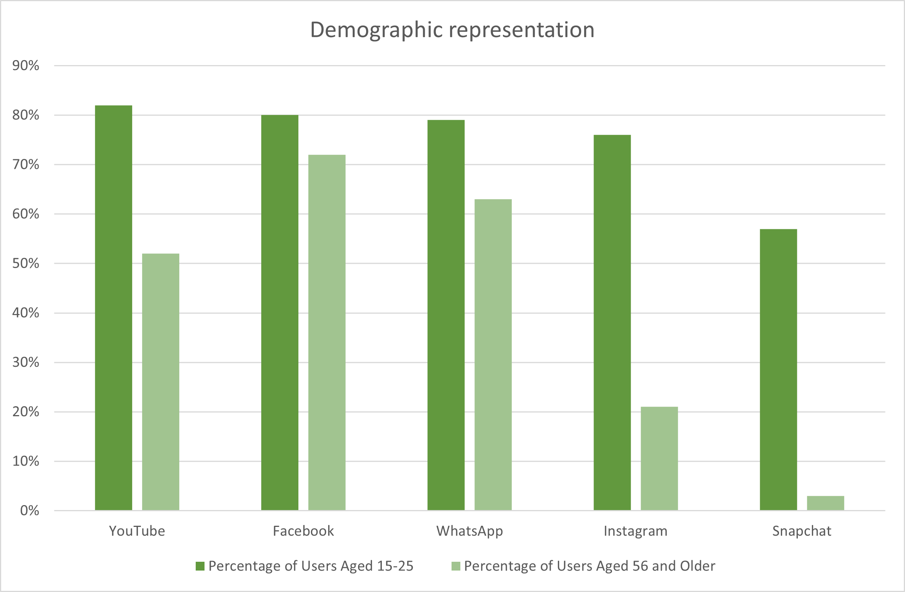

Cross-cultural Ties Through Social Media Platforms
United Kingdom
Top 5 Social Platforms:
- YouTube
- Snapchat
Similarties in Social Media can be seen generally in the Westernised countries. Brazil and the United States show similar results, as both contain sites such as Facebook, YouTube and Instagram. However, the United States and Brazil both have Twitter and Pintrest in their top 5, the United Kingdom does not. Generally, the strongest correlation between usage is in Instagram and YouTube, therefore making these the most culturally diverse platforms.
Demographic Chart for Social Media Usage in the United Kingdom
What is YouTube?
It is a platform for uploading video content in forms of live streams, short clips or standard-length videos. YouTube also facilitates the ability to purchase and stream movies, like that of Netflix or Disney+.YouTube is entirely free to use, and most of the content is free to watch. This makes it attractive to every audience of people as many types of free content can be found in order to match viewers diverse interests.
YouTube also features strong educational benefits as it allows teachers and students to easily find content related to their studies.